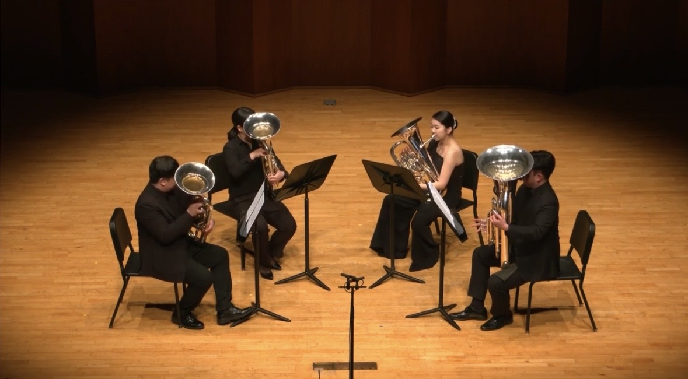
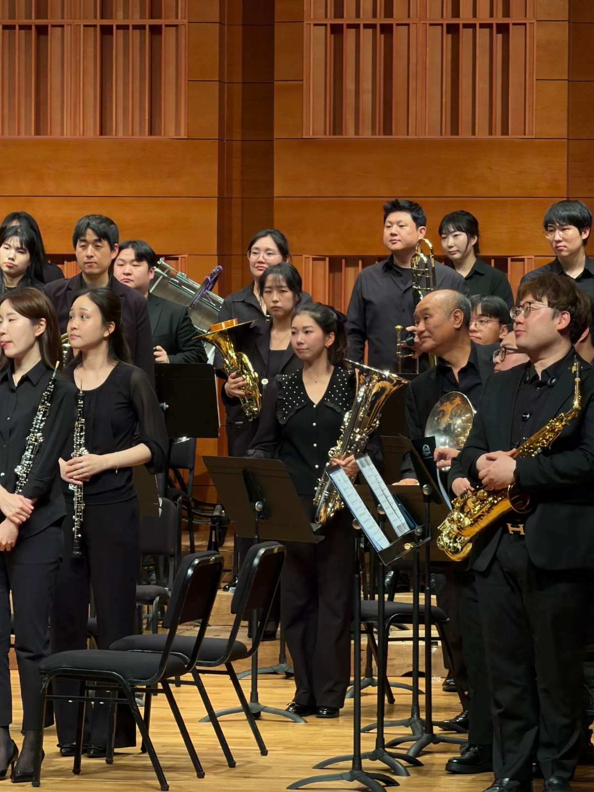
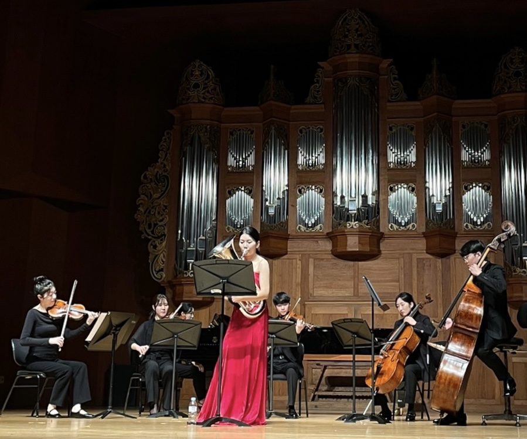
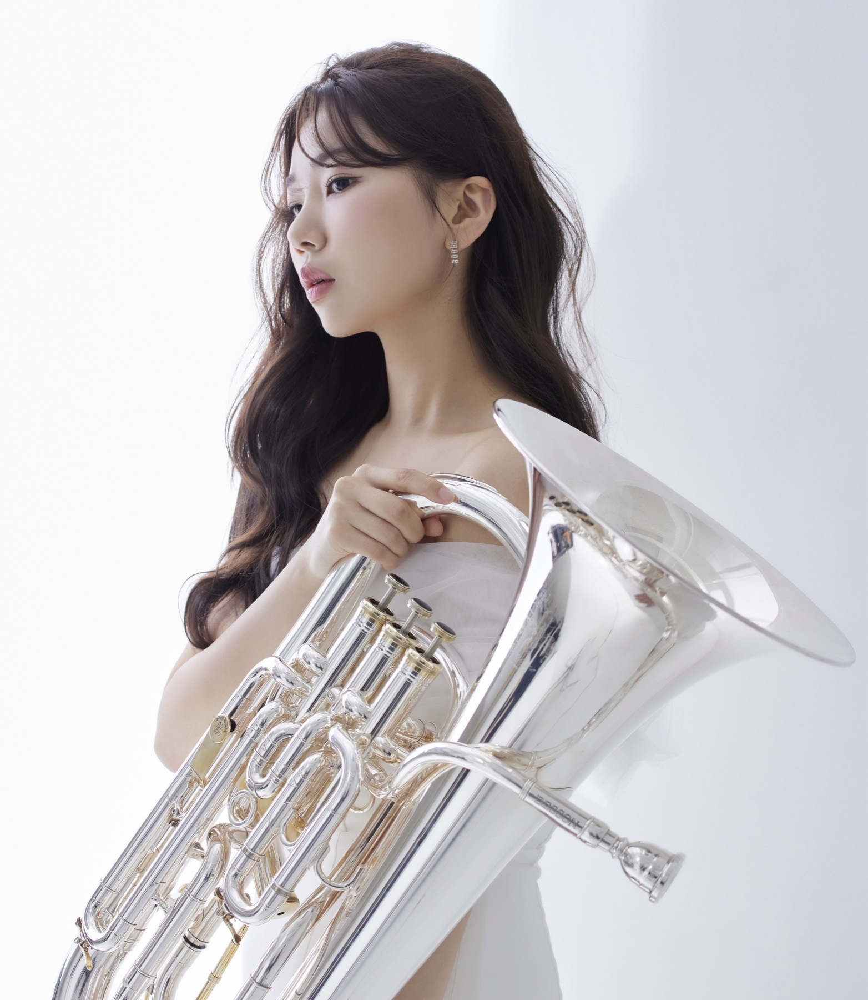
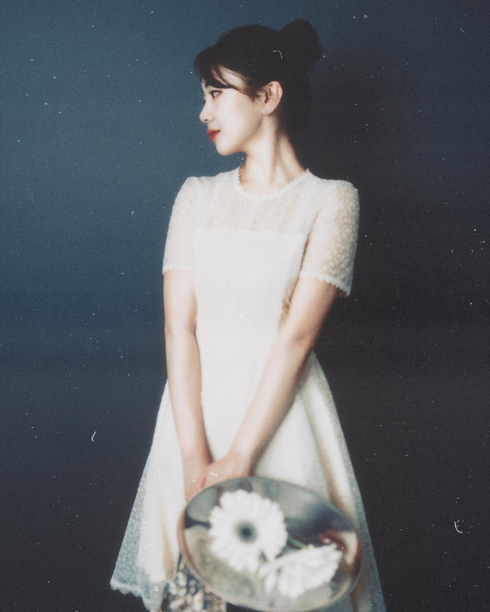

01
Breathing and Instrument Sound: A Sensor-Based Study
Sensors loaned by Yamaha
An ongoing research project investigating how a performer's breathing affects the sound of the instrument, using sensors loaned free of charge by Yamaha.

My background as a performer shapes the questions I ask about technology, interaction, and human experience.
Euphonium Performance
Korea National University of Arts
Research Intern
IBD Lab, KAIST
With a background in music performance, I am interested in exploring how technology can create better experiences for performers, audiences, and users.
Music × Technology × Human Experience
02Research
Research projects I have taken part in, grouped by where they took place.
01
Sensors loaned by Yamaha
An ongoing research project investigating how a performer's breathing affects the sound of the instrument, using sensors loaned free of charge by Yamaha.
02
Research on developing technologies for interpreting and evaluating design using Generative AI.
My RoleData Collection · Web Service Investigation · Data Categorization · Research Support for Design Evaluation Criteria
03
Participated in a Smart Mirror project exploring interactive experiences and human-centered technology.
04
DACON × ETRI Lifelog Dataset / Paper Competition
Research on personalized stress prediction using pre-sleep lifelog features, user baseline-based Z-scores, and past sleep/survey history.
05
Conditional autonomous driving
Supported user experiments on multimodal interface effectiveness in conditional autonomous driving environments.
06
Team of two · Rokid Glasses
In rehearsal, conductors give instructions without warning, and players can't write them down because their hands are on their instruments. Madimadi listens continuously: one tap on the glasses after an instruction saves the last 20 seconds. The speech becomes bar-by-bar cards (bar, part, issue type, short Korean keywords). When the conductor says "from bar 34," that bar's card appears on the glasses. The remaining cards can be handed to substitute players as a list in bar order.
My RoleConcept Proposal · Prototype Implementation · Test Recording Production · User Flow & Glasses UI Design · Demo & Presentation
03Venture
A product I am building with my team, from idea to prototype.
01
Performance booking & payment platform · Passed Stage 2, working toward Stage 3
ByStage is a performance platform that connects organizers, performers and audiences around a single performance. At its core is the booking transaction: organizers find and book guest performers, and every step is recorded, from confirming terms to paying the performance fee. Through these bookings, performers build a verified career record, and finished performances open to audiences.
My RoleOverall Concept & Direction · Prototype Design · User Interviews · Customer Validation · Spec Design
04Publications
Archives of Design Research
1Hongik University2KAIST, Culture Technology, IBD Lab
Research on personalized stress prediction using pre-sleep lifelog features, user baseline-based Z-scores, and past sleep/survey history.
DACON × ETRI Lifelog Dataset / Paper Competition
05Patents
Patent Application
Patent Application
06Archive
Posters, performances, recordings, studio portraits, and projects.
Recital and concert posters.
On stage — concerts, ensembles, and recitals.



Performance videos.
The performer, in still frames.


Collaborative and coursework projects.
2022
Audio-Immersive Sound Piece
Final project, Musicking (liberal arts course) · Team of six, planned and produced together
My RoleProposed the concept of a nightmare in an empty school; recorded euphonium breath sounds for the soundtrack.
An audio-immersive piece about an empty school at night. Listeners in a lecture room put their heads down, close their eyes and hear one shared soundtrack through earphones or the room speakers: rain, a ticking clock, a door in the wind, creaking desks and radio noise, over a cheolhyeongeum (Korean steel-string zither) melody. The aim was to make a familiar, crowded classroom feel empty and uncanny, so that each listener is alone in the sound while the whole room shares it.
Musica Euphonium Tuba Ensemble
Seoul Arts Center
Artenium Brass Band with David Childs
Bucheon Arts Center Concert Hall
K-ARTS Graduation Recital
Lee Kang Sook Hall, Korea National University of Arts
Artenium Brass Band with Bastien Baumet
Konkuk University Saecheonnyeon Hall Concert Hall
Masterclass with Bastien Baumet
Korea National University of Arts
Participant, Jeju International Brass & Percussion Competition
Jeju
National Symphony Orchestra of Korea with Alexandre Malofeev
Tongyeong Concert Hall
National Symphony Orchestra of Korea
Solo Euphonium Part in Pictures at an Exhibition
Seoul Arts Center Concert Hall
Seoul Wind Orchestra, 110th Regular Concert
Korean Premiere of Symphony No.1 by Carlos Pellicer
Lotte Concert Hall
Kuna Wind Orchestra
Lee Kang Sook Hall
Chamber Ensemble Recital
Lee Kang Sook Hall
Euphonium Project in Korea
Mozart Hall
Jinhae Military Band & Honor Guard Festival
Marching Band Performance
Jinhae
Masterclass with Corentin Morvan
Korea National University of Arts
From performance to research — the record continues. Research
07Curriculum Vitae
Euphonium Performance
MATINE, KAIST (Prof. Jinwoo Lee)
IBD Lab, KAIST (Prof. Jihyun Lee)
ETRI, AI Robot UX Research Lab
Min, S., Kim, G., Hong, Y., Youn, Y., Yum, J., Jang, E., Hyun, S., & Lee, J.
Kyeongran Moon, Sujin Hyun
Patent Application · Application No. 10-2026-0042437 · Filed: March 10, 2026
Patent Application · Application No. 10-2026-0042438 · Filed: March 10, 2026
Baemoon High School Wind Orchestra, Seoul
Gonggan Insoft
Teamplay Arts Planning
Seoul Arts Center
Bucheon Arts Center Concert Hall
Lee Kang Sook Hall, Korea National University of Arts
Konkuk University Saecheonnyeon Hall Concert Hall
Seoul Arts Center Concert Hall
Lotte Concert Hall
Lee Kang Sook Hall
Full performance record in the Archive.
Awards & Honors
Entrepreneurship & Activities
Participant · Team Madimadi (2 members)
Team Leader, Team K² — ByStage
Participant
Certifications
Photoshop · Illustrator · Visual Design
Training
KAIST